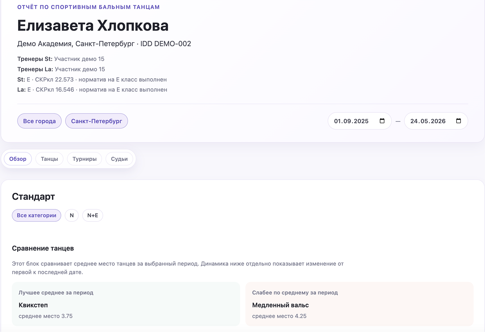
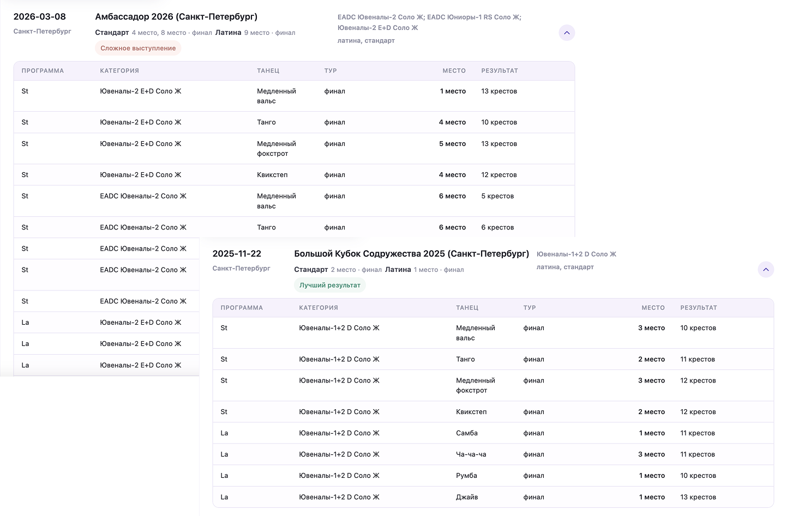
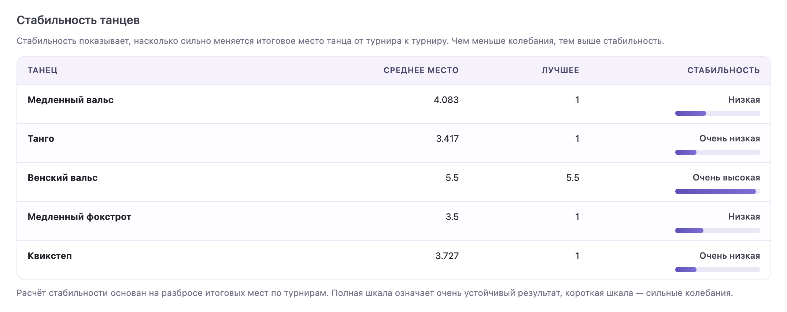
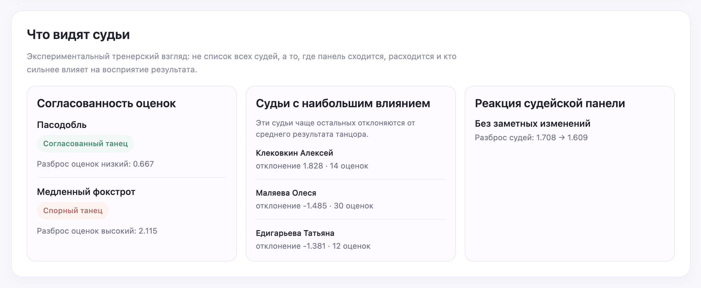
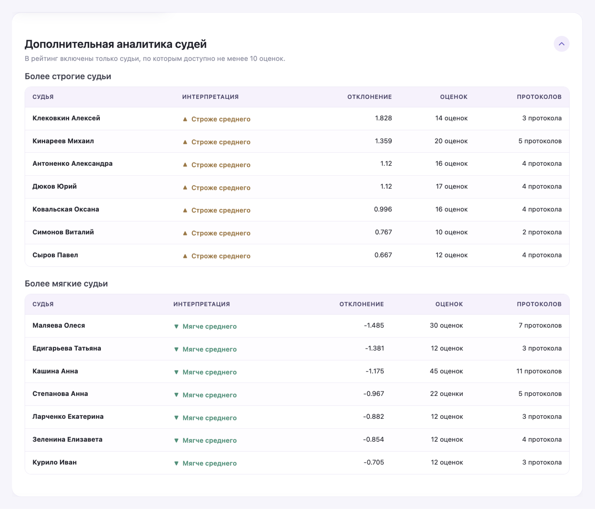
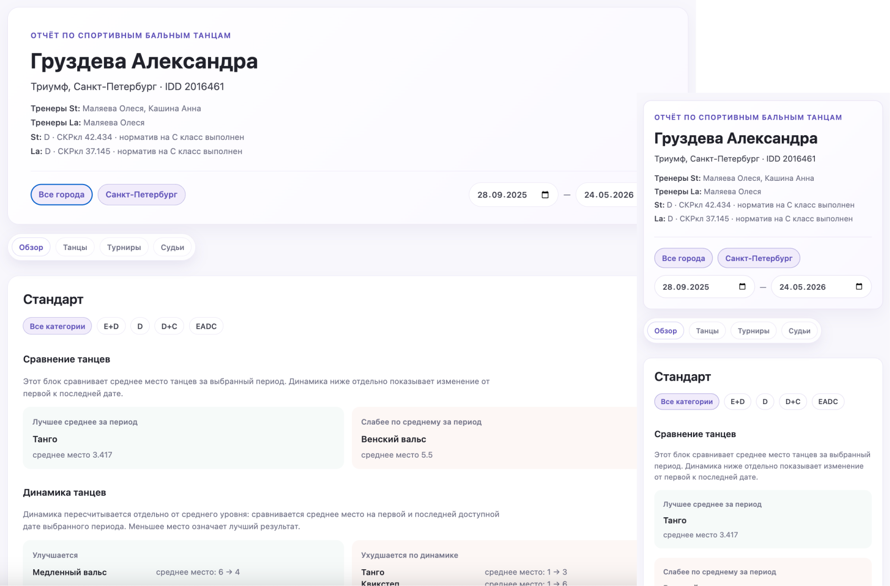

Танцевальная аналитика: от протоколов к инсайтам
Контекст
Моя дочь занимается спортивными бальными танцами. И довольно быстро я столкнулась с проблемой, знакомой многим родителям в этом спорте.
В танцах нельзя сказать: «она пробежала быстрее всех» или «забила больше голов». На результат влияет техника, музыкальность, артистизм, внешний вид, уверенность на паркете, состав соперников, судейская линейка и ещё множество факторов.
Поэтому после турнира родители обычно слышат от тренера примерно одно и то же: «Сегодня судьи не заметили», «Она нестабильна», «Технически танцевала хорошо», «Не ваш день». Для тренера такие выводы очевидны. Для родителя — нет.
Мне, как математику, хотелось подтвердить эти объяснения данными.
В чём была проблема
На первый взгляд кажется, что данных в танцах мало. На самом деле их очень много. Проблема в том, что эти данные существуют отдельно друг от друга. Необходимо найти нужные протоколы, сравнить их, сопоставить оценки, судей и понять, какой именно танец провалился.
Иногда видно, что все судьи оценивают выступление примерно одинаково и проблема действительно в качестве исполнения. А иногда появляются интересные закономерности. Например, отдельные судьи стабильно оценивают спортсмена строже среднего и оказывается, что наблюдения тренера про судейскую линейку вполне подтверждаются статистикой.
Но чтобы увидеть это, приходилось вручную собирать данные из десятков протоколов. При этом сами протоколы отвечают только на вопрос «какой результат получился». Меня интересовал другой вопрос:
Почему получился именно такой результат?
С чего всё началось
Изначально я вообще не собиралась делать отдельный продукт. Мне хотелось сделать простой промпт для ИИ, который по ID танцора анализировал бы результаты с сайта соревнований и объяснял, что происходит.
Довольно быстро выяснилось, что этого недостаточно. Анализ работал медленно, а в некоторых случаях ИИ начинал делать выводы там, где мне нужны были точные цифры. Для разговора это нормально. Для статистики — нет.
Сначала я думала обойтись отчётом, который запускался бы из терминала и собирался в PDF, но быстро стало понятно, что эта концепция работает только для личного использования. А чтобы дать доступ тренерам и другим родителям мне нужен нормальный интерфейс. В конце концов дизайнер я или кто?
Так проект постепенно вырос в полноценное веб-приложение с историей турниров, аналитикой и визуализацией данных.

Что пришлось разобрать
Этот проект оказался намного шире обычной дизайн-задачи. Мне пришлось одновременно выступать в ролях продуктового дизайнера, аналитика данных, исследователя и владельца продукта.
Но самое интересное было даже не в этом. Чтобы аналитика действительно помогала объяснять результаты, сначала пришлось разобраться в том, как эти результаты вообще считаются.
Многие думают, что итоговое место — это просто среднее арифметическое оценок судей. На самом деле нет. В какой-то момент мне пришлось разбираться в скейтинговой системе, крестах, финалах, полуфиналах и других вещах, о существовании которых большинство родителей даже не подозревает.
Параллельно пришлось понять, как считать стабильность результатов, как анализировать судей, как сравнивать турниры между собой и какие данные вообще могут быть полезны тренеру, а какие выглядят интересно только на первый взгляд.
Сначала нужно было понять логику спорта, и только потом превращать её в аналитику.
Что получилось
В результате появился единый аналитический отчёт, который собирает данные из множества турниров и показывает их в понятном виде.
Первое, что стало удобно делать — смотреть динамику результатов за сезон. Вместо отдельных турниров появилась возможность увидеть общую картину и понять, где есть рост, а где результаты остаются стабильными.


Довольно быстро выяснилось, что для тренеров особенно важна не разовая победа, а стабильность. Поэтому одной из самых полезных аналитик оказался анализ танцев. Теперь стало видно, какие танцы регулярно показывают хороший результат, а какие требуют дополнительной работы.

Отдельно интересно было посмотреть на судей. До этого разговоры про судейскую линейку оставались скорее ощущениями и наблюдениями. После появления статистики стало возможно увидеть, какие судьи оценивают спортсмена строже или мягче среднего и насколько сильно их оценки отличаются от общей картины.


Именно здесь появились самые неожиданные инсайты. Например, оказалось, что некоторые представители клубов, которые считались дружественными, оценивали спортсмена заметно строже, чем ожидалось.
Неожиданно полезным оказался и анализ категорий. В одной категории сильнее выглядел вальс, а в другой — танго. На первый взгляд это выглядело как противоречие, но по словам тренера, такие различия помогают косвенно оценивать уровень соперников и конкурентную среду, а не только качество собственного выступления.
В итоге вся информация о турнире теперь находится в одном месте. Даже если спортсмен не вышел в финал, можно сразу увидеть итоговое место, результаты по танцам, оценки судей и общую картину выступления без необходимости открывать несколько разных протоколов.
Что дальше
Сейчас система всё ещё зависит от публикации официальных результатов на основном сайте. Поэтому после турнира мне по-прежнему приходится ждать появления протоколов и периодически проверять, опубликованы они или нет.
Следующий шаг развития продукта — автоматическое отслеживание новых результатов, уведомления о публикации турниров и автоматическое обновление аналитики без ручной проверки сайта.
Так как MVP уже работает, пришло время наводить красоту. В планах приблизить оформление к стилистике нашего танцевального клуба и поправить нюансы, за которые цепляется глаз.
Демо продукта
Открыть интерактивную демо-версию продуктаВывод
Этот проект начался с желания лучше понимать результаты соревнований.
В итоге получился аналитический инструмент, который помогает превращать разрозненные спортивные протоколы в понятные выводы и проверять гипотезы данными, а не только ощущениями.
А ещё это оказался мой первый опыт, когда ИИ стал не просто помощником для отдельных задач, а полноценным инструментом создания продукта — от идеи и аналитики до работающего решения.

Иногда после турнира кажется, что всё прошло плохо. Но когда смотришь данные за сезон, оказывается, что отдельные танцы продолжают показывать стабильный результат, а просадка связана только с одним элементом программы.
Такие вещи сложно увидеть по одному турниру, но хорошо видно на длинной дистанции.